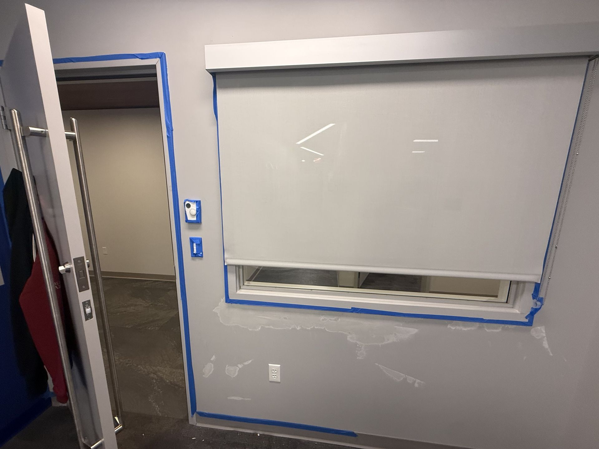

For general contractors · Capital Region
Post-construction & punch-list partner for general contractors.
Rough, final and touch-up cleans, punch-list paint and drywall fixes, and debris haul-out — scheduled around your inspections and owner walkthroughs, with the COI and W-9 in your inbox fast.

Closeout without the chaos
On most jobs the last two weeks decide whether the owner walkthrough goes well. That's when the cleaning sub shows up short-handed, the painter is on another site, and nobody owns the dust on top of the door frames. TPS Pro exists to take that whole stretch off your plate.
We're an Albany-based crew that does both halves of closeout: the cleaning and the fixes. The same people who run the final clean can patch a dinged corner, touch up paint, re-caulk a vanity and haul out the last of the debris — so your punch list gets shorter instead of longer after we leave. We work for general contractors, developers and owners' reps on commercial buildouts, multifamily and student-housing projects, medical and retail fit-outs, and occupied-building renovations across the Capital Region.
What we handle on your job
Hire us for one phase or all three. Each is scoped from your drawings, unit list or a site walk.
Rough clean
After drywall and before finishes: bulk debris out, floors scraped and swept, dust knocked down from framing, boxes and ledges so finish trades start clean.
Final clean
Before the owner walkthrough and inspections: every surface top to bottom — fixtures, glass, frames, vents, cabinets inside and out, sills, floors — with stickers and overspray removed.
Touch-up clean
After punch-list work and just before occupancy: a light pass to catch fresh dust and footprints so the space is turnover-ready on move-in day.
Punch-list paint & drywall
Wall and ceiling patches, corner dings, paint touch-ups, caulk and small fixes handled by our crew — no separate trade to schedule.
Debris haul-out
Construction debris and cleaning waste bagged and removed to your on-site container, or hauled off site when it's in the scope.
Turnover-ready handoff
Unit-by-unit or floor-by-floor handoffs on phased jobs, so the owner, the property manager or leasing can take spaces as they finish.
From bid invite to handoff
Invite us to bid
Send the invite from BuildingConnected, Procore or your own bid list to bookings@totalpropertysolution.net — we can be added to your bid list for final cleaning and punch-list work.
Site walk & written scope
We walk the job or review drawings and return a written scope per phase, plus our W-9 and COI with the additional-insured wording your contract requires.
Scheduled to your milestones
We lock phases to your inspection dates, owner walkthrough and certificate-of-occupancy target, and work nights or weekends when trades need the days.
Closeout & handoff
Final and touch-up cleans, punch items closed, debris out — and a space the owner can walk without a list of cleaning items.
Built around inspection and move-in dates
Inspection dates slip, owner walkthroughs move up, and the final clean always gets squeezed. We plan for that. Crews can be staffed for overnight and weekend work so the clean happens between trades, and our 24/7 line means a schedule change at 9 p.m. doesn't wait until morning. On phased and multifamily jobs we can clean behind the finish trades floor by floor, so units are ready as soon as they pass.
Student-housing and multifamily projects are where that matters most. Move-in dates are fixed, and we already run 800+ unit student turns on the same kind of deadline. The crew that knows how to turn an entire building before keys go out is the crew you want on a new-construction closeout.
Construction and closeout photos




Ready for your subcontractor file
- W-9 and certificate of insurance, typically within one business day — additional insured on request
- Written scope and pricing per phase, matched to your drawings or unit list
- Our own crews — one point of contact from bid to handoff
- Nights, weekends and 24/7 scheduling around trades and inspections
- Bonded & insured, working in the Capital Region since 2019
Procurement or project admin handling your sub setup? Send them to our vendor packet page.
Related services & job-site areas
We work job sites across the Capital Region, including:
General contractor FAQ
What's the difference between a rough, final and touch-up clean?
A rough clean happens after drywall and before finishes, and removes bulk debris and heavy dust. The final clean comes before the owner walkthrough and inspections and covers every surface top to bottom. The touch-up clean is a light pass after punch-list work, right before occupancy, to catch fresh dust and footprints.
Can you handle punch-list paint and drywall, not just cleaning?
Yes. Our crew patches walls and ceilings, touches up paint, caulks and handles small fixes during the same visit, so you don't need to schedule another trade to close those items.
How fast can you send a COI and W-9?
Typically within one business day. Send the certificate-holder name and address and any additional-insured wording your contract requires, and we issue the COI to match.
Can you work around inspections and our CO date?
Yes. We schedule phases to your inspection dates, owner walkthrough and certificate-of-occupancy target, and we can staff nights and weekends so the clean happens between trades.
Do you haul away construction debris?
Yes. We bag and remove construction debris and cleaning waste to your on-site container, or haul it off site when that is part of the scope.
How do we add TPS Pro to our bid list?
Send the bid invitation from BuildingConnected, Procore or your own system to bookings@totalpropertysolution.net, or call (518) 948-7156. We can be added to your bid list for final cleaning and punch-list work.
Put us on your next closeout
Send the project and the phases you need. We come back with a written scope per phase, plus the COI and W-9 for your sub file.
- Rough, final and touch-up cleans
- Punch-list paint & drywall in the same visit
- COI with additional insured on request
- Add us to your bid list on BuildingConnected or Procore